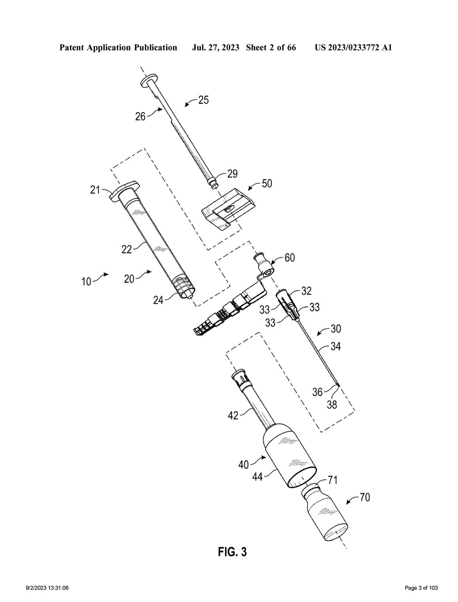
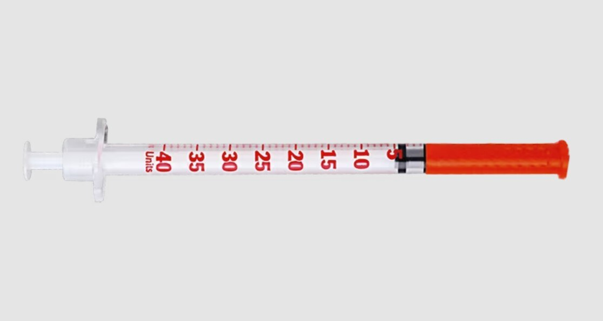
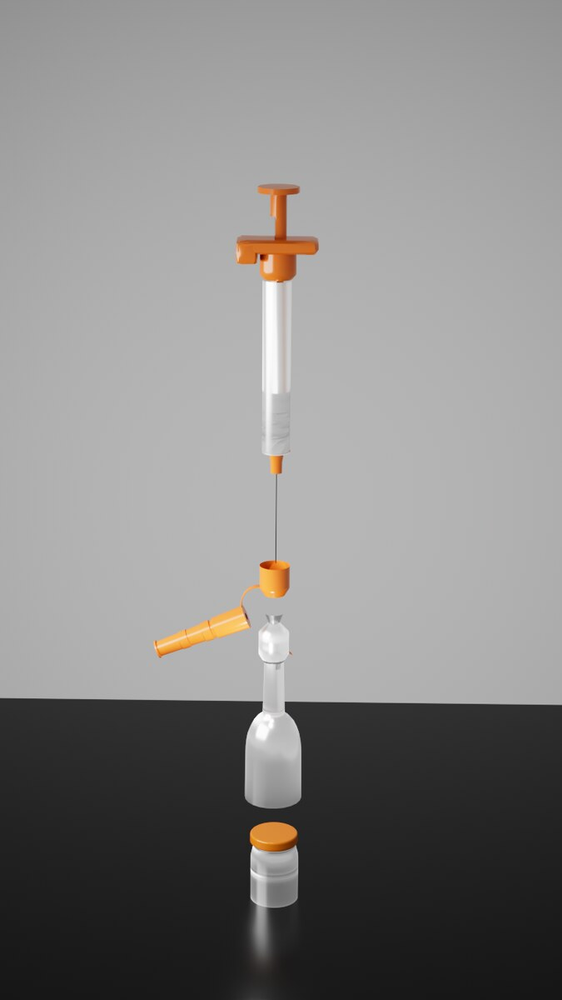
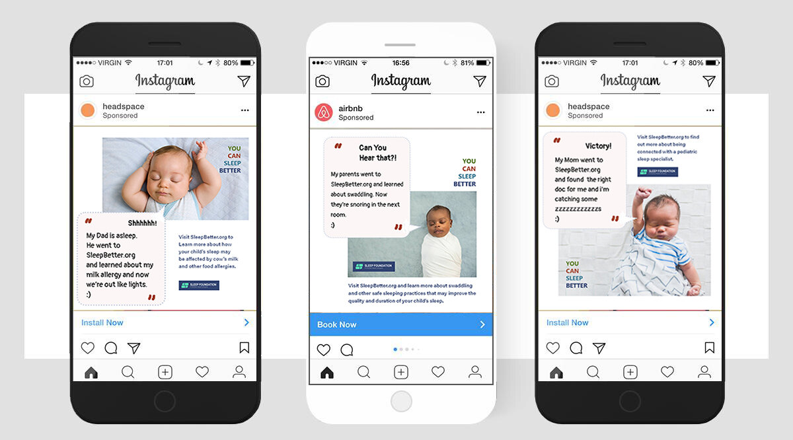

Medical Illustration & Trial Demonstratives
Surgical procedures · medical devices · complex evidence
Making medical, scientific, and technical evidence clear and accurate for people who are not experts, the core problem in demonstrative evidence. The featured piece below reconstructs a device from its patent filing.
Most of the work below was produced in my graduate program in biomedical visualization. Where a piece connects to litigation or clinical communication, I have said so directly.
Featured — Medical Device & Patent Visualization
Reconstructing a patented syringe from a published filing
Patent figures are drawn for examiners, not for juries, clients, or the public. They are precise but abstract: exploded line drawings with numbered callouts that a non-specialist cannot easily read. For this project I took a published patent filing for a safety syringe (U.S. Patent Application Publication US 2023/0233772 A1) and reconstructed the device as an accurate three-dimensional model, then rendered and composited it into a photoreal image that shows the same device the way a person would actually see it.
This is the exact translation an IP or patent matter often needs: turning the technical record of a device into something a lay audience can understand and evaluate, without losing fidelity to the source. I modeled each component to match the filing, built materials for metal, opaque and transparent plastics, and glass, rendered in multiple passes in Redshift, and composited in Photoshop, keeping the finished visualization faithful to the patent geometry.
On the left, the raw geometry straight out of the 3D scene. On the right, the finished composite, placed against the patent's own exploded assembly drawing and a labeled vial, so the reconstruction can be read directly against its source.
Modeled in Cinema 4D, rendered multi-pass in Redshift, composited in Photoshop.
From patent filing to finished visualization



Procedure Demonstratives
Explaining how something works, step by step

Scientific Communication & Data
Translating research, imaging, and health information


Public & Social Science Communication
Health messaging, social ads, and campaign design
Translating health and science for a general audience, in the places people actually see it. This campaign for the Sleep Foundation's "You Can Sleep Better" initiative turns pediatric and safe-sleep guidance into short, friendly social ads, each pairing a plain-language message with a clear call to action and designed to run as sponsored posts.

The ads in context, mocked up as sponsored Instagram posts. The series runs on one consistent visual system: the "You Can Sleep Better" lockup, a warm testimonial voice, and the Sleep Foundation brand, so the pieces read as a set.
Anatomical & Medical Illustration
Accuracy and rendering